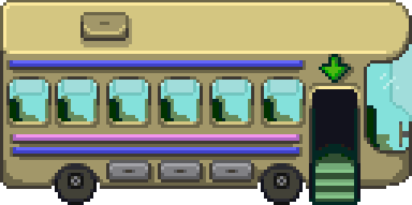

This is a Stardew Valley inspired map sprinkled with my personal selection of Montreal's highlights. You can move around as you see fit to discover them. If you ever get lost, click on the bus  icon in the top-left corner of the map. It will appear as you move away from the starting point.
The city of Montreal is located on unceded Indigenous lands. The island's name is Tiohti:áke in Kanien'kéha and Mooniyang in Anishinaabemowin. Its recognized custodians are the Kanien'kehá:ka Nation, members of the Haudenosaunee confederacy.